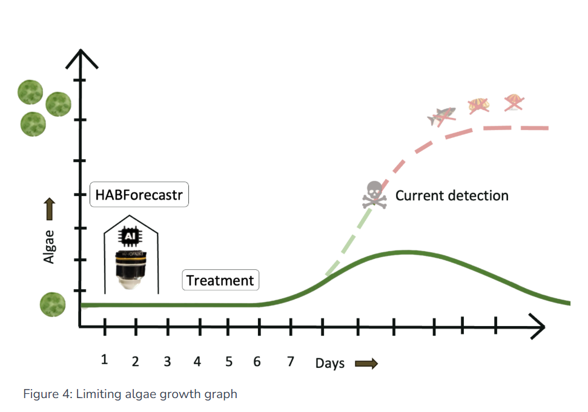

My work at LineSpect moved between CAD, the 3D printer, the soldering station, and the optics bench within the same day.
In a small startup, I touched every part of the system.
Note: Detailed designs and product images are under NDA. The images shown here are of the broader optical system and imaging results. I am happy to walk through my specific contributions in conversation.
The Product: HABForecastr
HABForecastr is a submersible microscope that predicts harmful algal blooms 7 days in advance, at 1/6th the cost
of current detection systems. I worked on the optical and mechanical systems that make this possible.

HABForecastr optical system: lightsheet microscopy setup for algae detection
Additional Projects
Microplastics Detection System
Created comprehensive CAD mockup of the product to support proposal development for environmental monitoring applications
3D Printer Maintenance & Recovery
Diagnosed and recovered SLA and FDM printers, resolving both hardware and firmware issues to restore full functionality.
Impact

HABForecastr's algae growth prediction model
The HABForecastr technology has the potential to save millions annually by providing early warning of harmful algal blooms,
protecting coastal communities, industries, and public health.
Skills & Technologies
Optical Design
Exposure to Zemax
Lightsheet Microscopy
CAD Design
3D Printing
Reflow Soldering
LED Driver Testing
ImageJ Analysis
Glass/Mirror Cutting
System Integration
Rapid Prototyping
Electronics Debugging